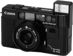

器材
党
全部器材
产品年表
名词百科
榜单
器材库
> 胶片袖珍相机（PS） > AF35M

佳能
AF35M
分类
胶片袖珍相机（PS）
点评
0 条
图片
0 张
评测
0 篇
AF35M 是佳能公司于1979年推出的，是世界上第一部采用红外线主动型自动对焦系统的袖珍相机。
产品类型
胶片袖珍相机（PS）
综合评分
暂无评分
无忌评测
暂无评测
规格参数
网友点评
(0)
产品图 / 样片
(0)
评测文章
(0)
规格总览
北美地区型号
Sure Shot
日本地区型号
AF35M (Autoboy)
发布日期
1979-11
厂家推荐价格
42,800.00 （日元）
产品类型
35mm镜头快门相机
使用胶卷/胶片
35mm胶卷
画幅
24×36mm
停产
是
镜头及对焦
镜头
38/2.8
镜头结构
4片/3组
对焦模式
AF
AF系统
红外线主动型自动对焦系统，支持预对焦
曝光控制
测光系统
用于全自动程序EE的CdS测光元件
测光范围
6EV~17EV
快门
电子控制式程序快门
快门速度
1/8 - 1/500秒
胶卷感光度
ISO 25-400
取景规格
取景器
带投影框的逆伽利略式取景器
取景范围
85%
取景放大倍率
0.5倍
取景器信息
图像区域带自动对焦框, 远中近区域对焦标记, 视差校正标记, 电池电量查看和相机抖动警告
过片系统
倒片
用倒片开关快速倒片
胶卷计数
顺数。当相机后盖开启时自动清零。胶卷倒片时倒数计数。
闪光灯
内置闪光灯
有
闪光指数
14
闪光模式
填充式闪光
其它规格
电池
2枚1.5V AA(5号)电池
颜色
黑色
尺寸
132×77×54mm
重量
405g
该产品暂无存档的网友点评
该产品暂无存档的产品图
评测 / 相关文章
该产品暂无存档的评测文章